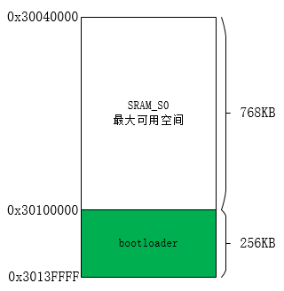

分散加载
16 May 2025
Read time: 1 minute(s)
分散加载方案是一种将负载分散到多个资源或服务器的方法，以实现负载均衡和提高系统的可用性和性能。分散加载方案的主要目标是确保在高并发访问时，每个资源或服务器都能得到适当的负载，从而避免单点故障和性能瓶颈。
SDK 默认代码分布
D13x 系列芯片 SRAM 大小为 1M Bytes，PSRAM 大小为 8M Bytes。发布的 SDK 默认配置是：系统运行时，代码段、rodata 段、data 段加载到 SRAM_S0，而 BSS 段位于 PSRAM_CMA (可参考 bsp/artinchip/sys/d13x/link_script/gcc_aic.ld.S)。在系统启动阶段，BootLoader 是加载到 SRAM 的最后 256KB 空间执行的，如下图所示：

所以，加载到 SRAM_S0 的代码段、rodata 段或 data 段不能超过 768KB 的大小，否则会覆盖 BootLoader，导致系统启动失败。
分散加载
在应用推广中，有的用户的代码量超过 768KB，有的用户想把部分代码或数据放到 PSRAM，为了实现不同的用户需求，在 D13x 中实现了分散加载功能。用户可以将代码段、rodata 段、data 段，或者是部分代码段或部分数据段加载到 SRAM 或 PSRAM，由 BootLoader 实现分散加载。
具体配置可以参考 Luban-Lite Memory 使用指南 的内存章节。